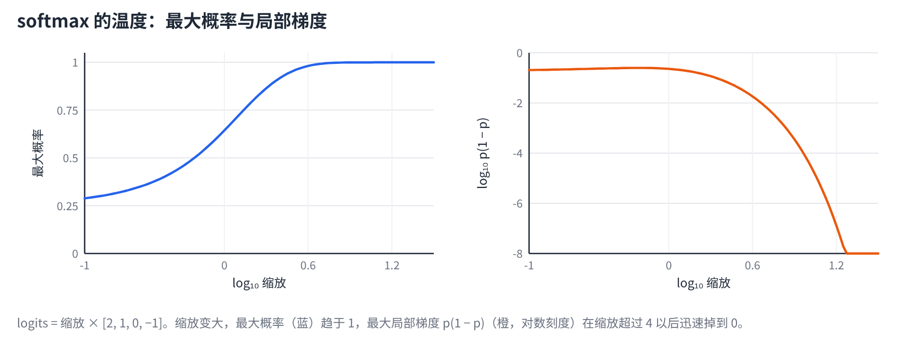
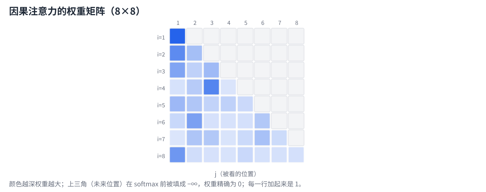
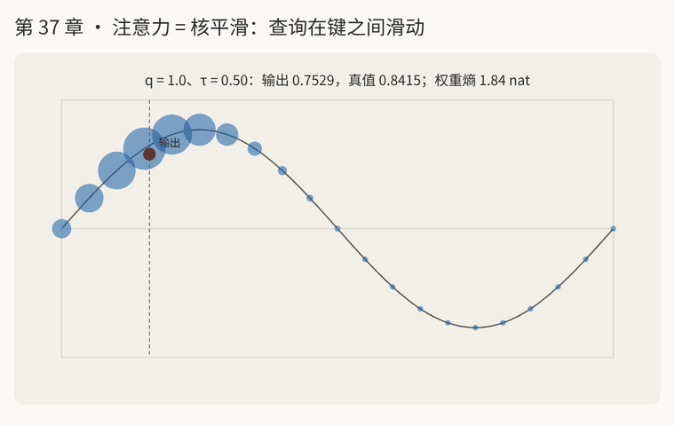

第 37 章 · 注意力的数学：√d 的方差推导、softmax 的饱和、核平滑、多头的低秩、因果 mask
本地运行
git clone https://github.com/wikieden/math-and-eval-stats
cd math-and-eval-stats/code/notebooks
pip install jupyterlab torch numpy
jupyter lab ch37_attention_math.ipynb也可以下载后直接用 VS Code 打开 .ipynb 运行。需要 GPU 的章节在 Colab 里选「代码执行程序 → 更改运行时类型 → GPU」。
本章回答：为什么点积要除以 √d？softmax 的"温度"为什么会让梯度消失？注意力和经典统计里的什么东西是同一回事？多头注意力每个头到底能表示什么？因果 mask 为什么填 −∞ 而不是 0？
讲解日期：2026-11-25 · 上一章：第 36 章 CNN 训练的数学 · 下一章：第 38 章 位置编码的数学
对应原文：Attention Is All You Needtransformer-deep-dive/materials/text/papers/attention-is-all-you-need-1706.03762.txt（§3.2.1 缩放点积注意力 L164、为什么除以 √d_k L184–L188、脚注 4 方差为 d_k L198–L201；§3.2.2 多头 L192）；Formal Algorithms for Transformerstransformer-deep-dive/materials/text/papers/formal-algorithms-transformers-2207.09238.txt（注意力与 mask 的伪代码）
本章缩写：Q、K、V = Query、Key、Value（查询 / 键 / 值）；d、d_k = 键的维度；d_head = 每个头的维度；h = 头数；τ = 温度；NW = Nadaraya–Watson（两位统计学家的姓：核回归）；nat = 以 e 为底的信息单位。全部缩写见 附录 · 缩写与术语表
讲解
第一步：为什么除以 √d：点积的方差是 d（2026-11-25）
类比：d 个人各掷一次硬币，正面 +1、反面 −1，加起来。 人越多，总和的波动越大（标准差 √d）。
q、k 每个分量独立、均值 0、方差 1，\(q\cdot k = \sum_{i=1}^dq_ik_i\) 是 d 个独立的、方差为 1 的项之和（AIAYN 脚注 4，L198–L201）：
| d | q·k 的标准差 | 除以 √d 后 |
|---|---|---|
| 16 | 4 | 1 |
| 64 | 8 | 1 |
| 256 | 16 | 1 |
不缩放的话，d 越大 logits 越分散，softmax 越接近 one-hot（下一步），梯度越小（AIAYN L184–L188）。除以 √d 让 logits 的尺度和 d 无关。
一句话：d 个独立项相加方差是 d，除以 √d 把 logits 的标准差拉回 1，softmax 不会因为维度大而饱和。
第二步：softmax 的温度与饱和（2026-11-25）
softmax 的雅可比是 \(\partial p_i/\partial z_j = p_i(\delta_{ij} - p_j)\)，对角元 p_i(1 − p_i)。一旦某个 p 接近 1，所有元素都接近 0：梯度消失。
例子（logits = 缩放 × [2, 1, 0, −1]）：
| 缩放 | 最大概率 | 熵（nat） | 最大局部梯度 p(1 − p) |
|---|---|---|---|
| 0.25 | 0.3499 | 1.3482 | 0.227 |
| 1 | 0.6439 | 0.9475 | 0.229 |
| 4 | 0.9817 | 0.0931 | 0.018 |
| 16 | 1.0000 | 0.0000 | 1.1 × 10⁻⁷ |
缩放 16 相当于 d = 256 时不除 √d（第一步的标准差 16）：梯度只剩 10⁻⁷。反过来温度太高（缩放 0.25），分布接近均匀，注意力"什么都看一点"，也学不出东西。

图 37-1 · 横轴缩放（对数），左轴最大概率、右轴最大局部梯度 p(1 − p)；缩放超过 4 以后梯度迅速掉到 0一句话：softmax 的梯度是 p(δ − p)，一旦接近 one-hot 就趋于 0；温度控制"选得多尖"，太尖太平都学不动。
第三步：注意力 = 核平滑（软查表）（2026-11-25）
类比：查字典的软版本。 普通字典是"键完全匹配就返回值"；注意力是"每个键按和查询的相似度打分，返回所有值的加权平均"。
统计里的 Nadaraya–Watson 核回归：
取 \(K(q, k) = e^{q\cdot k/\tau}\)，就是 softmax(q·Kᵀ/τ)·V，正是注意力。高斯核 \(e^{-\|q - k\|^2/2\tau^2}\) 展开后 = \(e^{q\cdot k/\tau^2}\cdot e^{-\|k\|^2/2\tau^2}\cdot\)（和 j 无关的常数）：键长度相同时两者完全一样。
例子（21 个键 = [0, 2π] 上的位置，值 = sin(位置)；查询 q = 1，真值 sin 1 = 0.8415）：
| 核宽 τ | 输出 | 说明 |
|---|---|---|
| 0.1 | 0.8147 | 几乎只看最近的键（≈ 最近邻） |
| 0.5 | 0.7529 | 平均了附近几个，有偏差 |
| 2.0 | 0.3931 | 几乎平均了全部，严重偏向整体均值 |
核宽（温度）在偏差和方差之间折中，和第二步是同一件事的统计视角。
一句话：注意力就是 Nadaraya–Watson 核回归：按相似度对值做加权平均，温度就是核宽。
第四步：多头 = 若干个低秩的打分矩阵（2026-11-25）
一个头的打分 \(s_{ij} = x_i^\top W_QW_K^\top x_j\)，中间那个 d_model × d_model 的矩阵 \(W_QW_K^\top\) 秩最多 d_head（AIAYN §3.2.2，L192）。
例子：d_model = 512、d_head = 64：\(W_QW_K^\top\) 是 512×512，秩只有 64。8 个头的 Q、K、V 参数共 3 × 512 × 64 × 8 = 786,432，和一个 512 维的头一样多。
所以多头不是"多花参数"，而是把一个满秩的相似度拆成 h 个低秩的、各自做 softmax 的相似度：每个头只能在一个 64 维的子空间里比较，但 h 个头可以同时关注不同的东西（一个看语法、一个看指代）。代价是单头的秩受限：d_head 太小时一个头表达不了复杂的匹配。
一句话：每个头的 W_QW_Kᵀ 秩 ≤ d_head；多头 = 用同样的参数换 h 个低秩、独立 softmax 的打分。
第五步：因果 mask：未来位置填 −∞（2026-11-25）
自回归生成时，第 i 个位置只能看 j ≤ i。做法：在 softmax 之前把 j > i 的分数设成 −∞，e^{−∞} = 0，这些位置的权重恰好为 0，剩下的自动重新归一化。
例子（4×4 随机分数加 mask 后的权重，每行和都是 1）：
| j = 1 | 2 | 3 | 4 | |
|---|---|---|---|---|
| i = 1 | 1 | 0 | 0 | 0 |
| i = 2 | 0.29 | 0.71 | 0 | 0 |
| i = 3 | 0.377 | 0.215 | 0.408 | 0 |
| i = 4 | 0.059 | 0.481 | 0.172 | 0.288 |
为什么不是在 softmax 之后乘 0：那样每行和不再是 1，还得重新归一化；为什么不是填 0：e⁰ = 1，未来位置会分到权重。n = 4096 时可见的 (i, j) 对 8,390,656，约 n²/2：FlashAttention 等实现会直接跳过全被 mask 的块，省一半算力。

图 37-2 · 8×8 因果注意力权重（颜色越深权重越大），上三角全是 0；每行和为 1场景代码：PyTorch 的写法（真实库调用；本书环境没装 torch，没跑过）：
out = F.scaled_dot_product_attention(q, k, v, is_causal=True) # 内部除以 √d、填 −∞、softmax
# 等价的手写版
s = q @ k.transpose(-2, -1) / math.sqrt(q.size(-1))
s = s.masked_fill(torch.triu(torch.ones(n, n, dtype=torch.bool), 1), float("-inf"))
out = s.softmax(-1) @ v
一句话：因果 mask 在 softmax 之前填 −∞，未来位置权重精确为 0、每行仍归一化；约省一半计算。
动画演示：查询在键之间滑动

可交互版：animations/37-attention-math.html（滑块调查询位置 q 和温度 τ）。
怎么看：
- 灰色曲线是 sin，21 个点是键值对；每个点的大小是它的注意力权重（第三步）；
- 红点是输出（加权平均），竖虚线是真值 sin q；
- τ 调小：权重集中到最近的一两个点（尖），输出贴近真值；τ 调大：权重摊平，输出被拉向整体均值（第二、三步）。
练习与作答记录
题 1（第一步）：如果 q、k 的每个分量方差是 σ²（不是 1），q·k 的方差是多少？要让 logits 方差为 1，应该除以什么？
作答：（待作答）
题 2（第二步）：两个 logits [z, 0]，softmax 的第一个概率是 sigmoid(z)。z 为多少时 p(1 − p) 降到 0.01 以下？
作答：（待作答）
题 3（第四、五步）：d_model = 1024、h = 16，每个头的打分矩阵秩最多多少？n = 6 的因果 mask 一共保留多少个 (i, j) 对？
作答：（待作答）
口诀
d 个硬币加起来，标准差根号 d，所以除根号 d；
softmax 太尖梯度没，太平学不出；
注意力就是核回归，温度就是核宽；
每个头秩不过 d_head，多头是拆开不是加；
因果 mask 先填负无穷，再 softmax。
本章复习卡片
ST124（√d 的方差推导；softmax 的饱和）、ST125（注意力 = Nadaraya–Watson 核回归）、ST126（多头的低秩视角；因果 mask 为什么填 −∞）。练习做完后，按答错、卡住的地方补上。
附录 · 延伸阅读
留给以后深入学习用，不影响本章主线。★ 是建议先读的。
推荐阅读
| 读什么 | 读哪里 | 读它为了什么 |
|---|---|---|
| ★ Attention Is All You Need | §3.2.1–3.2.2（L164–L201） | 缩放点积与多头的原文 |
| ★ 《从零读懂 Transformer》第 8 章 √d_k、第 13 章 多头、第 17 章 因果 mask | 全章 | 直觉版和动画 |
| Formal Algorithms for Transformers | 注意力、mask 的伪代码 | 精确的符号和形状 |
| 第 30 章 泛函分析入门 | 第六步 | 核方法、RKHS |
| 第 22 章 数值计算 | 第二步 | softmax 的稳定写法 |
数学原理
- 独立和的方差：Var(Σq_ik_i) = ΣVar(q_ik_i) = Σ E[q_i²]E[k_i²] = d。
- softmax 的雅可比：J = diag(p) − ppᵀ（第 34 章：也是 softmax 策略的 Fisher）。
- 高斯核 = 指数点积核 × 键长度项：\(-\|q - k\|^2/2 = q\cdot k - \|q\|^2/2 - \|k\|^2/2\)，‖q‖² 在 softmax 里约掉。
- 秩不等式：rank(AB) ≤ min(rank A, rank B)。
公式清单
| 公式 | 意思 |
|---|---|
| \(\text{Var}(q\cdot k) = d\) | 点积方差 |
| \(\text{softmax}(QK^\top/\sqrt d)V\) | 缩放点积注意力 |
| \(\partial p_i/\partial z_j = p_i(\delta_{ij} - p_j)\) | softmax 雅可比 |
| \(\hat f(q) = \sum K(q, k_j)v_j/\sum K(q, k_j)\) | Nadaraya–Watson |
| \(\text{rank}(W_QW_K^\top) \le d_{head}\) | 单头的秩 |
代码对照：把本章的数字用代码算一遍
代码在仓库本地
math-and-eval-stats/solutions/chapter-code/ch37_attention_math.py，配套测试tests/test_ch37.py：
bash cd math-and-eval-stats/solutions/chapter-code uv run python ch37_attention_math.py uv run pytest tests/test_ch37.py
讲义 ↔ 代码：
| 讲义 | 公式 | 写法 | 跑出来 |
|---|---|---|---|
| 第一步 方差 | √d | dot_std(d, scaled) |
4、8、16 → 1 |
| 第二步 饱和 | p(1 − p) | saturation(16) |
1.1e-7 |
| 第三步 核平滑 | NW | kernel_smoother(1.0, tau) |
0.8147、0.7529、0.3931 |
| 第四步 秩 | rank | head_rank() |
64 |
| 第五步 mask | −∞ | causal_weights() |
下三角，行和 1 |
关键几行：
w = softmax(-((q - x) ** 2) / (2 * tau ** 2)) # 高斯核权重 = 注意力权重
s[np.triu_indices(n, 1)] = -np.inf # 上三角填 −∞
np.linalg.matrix_rank(wq @ wk.T) # 单头打分矩阵的秩
代码里才看得到的 3 件事：
- softmax 先减行最大值：mask 后每行至少有对角线一个有限值，减最大值不会出现 −∞ − (−∞) = nan。
- 第一步没有模拟：Var(q·k) = d 直接由公式给出，代码只返回 √d；用随机数验证它是留给自己的练习（里程碑 ME-M24）。
- 核平滑只有 21 个键：τ = 0.1 时间距 0.31 比核宽大，输出基本就是最近那个键的值，所以误差没有继续变小。
自己改一改（不影响练习答案）：
- 把键加密到 201 个，重看三个 τ 的输出。
- 把
head_rank的 d_head 改成 600（大于 d_model），秩会是多少？